open-gira
open-gira is designed to combine infrastructure information with hazard information to produce an estimate of the threat those hazards represent to that infrastructure. In this user guide we will be using a map of roads in Tanzania, and exploring their vulnerability to flooding (from both coasts and rivers).
Installation
This guide will help you to install open-gira on your computer.
We also include a guide for installing QGIS. QGIS is a program for working with geographic data, and is useful for examining some of the files open-gira works with.
open-gira
open-gira relies on many tools, some of which are complex to install. The installation process may take a while. Users familiar with Docker may wish to use the Docker install options to simplify the process.
Notes:
- If you are trying to install on Windows, use Windows Subsystems for Linux (WSL).
- Linux users may find the version of osmium-tool provided by their package repository is out of date. The instructions for building osmium-tool from source on Linux should work, however.
Tests
Once everything is installed, run the tests to ensure everything is linked up properly:
python -m pytest tests
Installation via Docker
The simplest approach to getting open-gira working is to build it within a container using Docker. You must have Docker installed.
- Clone this repository
git clone https://github.com/nismod/open-gira.git
- Build container image
docker build -t open-gira .
- Run container
We use the -it options to make the container interactive and give it a terminal,
and the -d option to keep it running in the background (daemon mode).
We give it a nice name we can refer to later, and make sure it is created using the
image we just built.
We tell it to run bash so that it has something to do and doesn't close immediately.
docker run -itd --name og open-gira bash
- Enter container
We can now lauch a bash shell in our new container:
docker exec -it og /bin/bash
And once inside we can navigate to the open-gira folder.
cd open-gira
We're now ready to run snakemake, launch a python prompt, or do whatever else we like.
Note that the Dockerfile has created the ./tanzania-latest.json file we would otherwise need to
write ourselves (see configuration), and has also downloaded the
OpenStreetMap data and flood hazard data.
This means the only installation step left is to (optionally) install QGIS outside of the container.
Linux installation
If you have conda installed, it is probably simplest to follow the conda install instructions in the MacOS section.
The workflow for installing on Debian/Ubuntu is the one used in the Dockerfile. For installations on different brands of Linux, please follow the steps for MacOS installation with pip, and note that the osmium-tool distributions are frequently out of date, and you will likely have to build the osmium-tool from its source.
Debian/Ubuntu
Dependencies
The first step is to get hold of the packages we'll need to run the software:
sudo apt update && sudo apt install \
build-essential \
cmake \
git \
libboost-program-options-dev \
libexpat1-dev \
libbz2-dev \
python3 \
python3-pip \
zlib1g-dev
Enter 'yes' to install when prompted, and address any other questions in the install process if they arise.
osmium-tool
The next step is to install the osmium-tool and its library.
This needs to be built from source, because the version distributed by apt is out of date.
git clone https://github.com/mapbox/protozero && \
git clone --branch v2.17.1 --depth 1 https://github.com/osmcode/libosmium && \
git clone --branch v1.13.2 --depth 1 https://github.com/osmcode/osmium-tool
Now we've downloaded the source files we need to build them:
cd osmium-tool && \
mkdir build && \
cd build && \
cmake .. && \
make && \
cd ../..
The last step to installing osmium is to create a symlink so we can access it from anywhere on the command line:
cp -s osmium-tool/build/osmium /usr/bin/osmium
open-gira
We install open-gira by cloning the repository:
git clone https://github.com/nismod/open-gira.git
Install Python requirements with pip
The final step is to make sure we have the Python libraries we need to run open-gira. We use pip to do this:
pip install -r open-gira/requirements.txt
MacOS installation
The most efficient way to install open-gira on MacOS is to use conda. Conda will take care of installing the tools on which open-gira relies. If you do not wish to install via conda, you can install via pip instead and install the osmium-tool libraries separately.
conda
This repository comes with a environment.yml file describing the conda and pip packages required to run open-gira.
Create the open-gira conda environment:
conda env create -f workflow/envs/environment.yml
and activate it
conda activate open-gira
pip
Pip installation requires installing the python requirements from requirements.txt,
as well as the osmium-tool software.
Installing Python libraries
Install python requirements as listed in requirements.txt - for
example using a venv:
python3 -m venv ./venv
. venv/bin/activate
pip install -r requirements.txt
Installing osmium-tool
Install osmium-tool according to the
instructions there. Tests run with versions:
- osmium-tool v1.13.2
- libosmium v2.17.1
Windows installation
Native installation on Windows is extremely difficult because of the difficulty building the tools that open-gira relies on (binaries are not available for Windows). To avoid this issue, we recommend Windows users install via Windows Subsystems for Linux (WSL). To install WSL, follow the install instructions.
Once WSL is installed, open-gira can be installed inside the Linux subsystem by following the Linux install instructions.
QGIS
QGIS is a program for viewing and creating geographic data files. The program is well-maintained and available for Windows, Mac, and Linux. Installing the program and all its components may take several hours. [TODO: Provide a list of required components to shorten install time?]
Configuration
The configuration file for the run is found in ./config/config.yaml.
Your configuration file should look like the below:
# Output directory
output_dir: 'results'
# Named list of OpenStreetMap datasets
infrastructure_datasets:
tanzania-latest: 'https://download.geofabrik.de/africa/tanzania-latest.osm.pbf'
wales-latest: 'https://download.geofabrik.de/europe/great-britain/wales-latest.osm.pbf'
# Named list of .txt files that specify hazard raster file locations
hazard_datasets:
aqueduct-coast: 'https://raw.githubusercontent.com/mjaquiery/aqueduct/main/tiffs.txt'
aqueduct-river: 'https://raw.githubusercontent.com/mjaquiery/aqueduct/main/rivers.txt'
# Number of slices to cut dataset into -- must be a square number
slice_count: 36
# Edge attributes to preserve during network/hazard intersection.
keep_tags: 'highway'
# Filters definition -- base filename is used as the filter name
osmium_tags_filters_file: "config/highway-core.txt"
# Options for exposure tif file generation
exposure_tifs:
# When generating exposure summaries, filter by cells with at >= exposure_threshold m of flooding
exposure_threshold: 0.5
# Used when scaling raster files, values < 1 will downsample
scaling_factor: 0.1
# Used to determine how resampling occurs. Valid values are in rasterio.enums.Resampling.
resampling_mode: 'bilinear'
# Options for plotting
plot:
# Keyword arguments for raster plotting
raster:
# Colour mapping to use for raster data
cmap: 'Reds'
You should also have a ./config/highway-core.txt file that looks like:
motorway,motorway_link,trunk,trunk_link,primary,primary_link,secondary,secondary_link
This configuration file holds everything we need to run the workflow.
The directory <output_dir> (hereafter ./results/) will be created when the workflow runs.
The infrastructure datasets will be downloaded, along with all the hazard raster
files listed in the hazard datasets.
The infrastructure datasets will be filtered and sliced, and then combined with
the hazard data to produce four output files, one for each of the
infrastructure-hazard dataset combinations.
The infrastructure datasets listed in this config are real, but the hazard datasets only contain a tiny fraction of the raster files available. This means the workflow is relatively quick to run compared to when we have gigabytes of hazard raster files.
Running
When we run snakemake we have to tell it how many CPU cores it can use to do its processing. If you have fewer than 4 cores, or wish to use more, substitute an appropriate number for the 4 below:
snakemake --cores 4
You should see a lot of text flashing by, and some loading bars. Eventually, everything should finish with a report along the lines of:
Finished job 0.
111 of 111 steps (100%) done
Complete log: /mnt/f/OxRSE/open-gira/.snakemake/log/2022-01-24T154611.005270.snakemake.log
Exploring output
The program will have created a great many files in subdirectories of ./results.
Each of these will be the result of one of the steps in the workflow process:
- Download OpenStreetMap data
- Filter OpenStreetMap data to focus on major infrastructure components
- Determine the bounding box from the OpenStreetMap data
- Download hazard raster files
- Clip hazard raster files to bounding boxes determined in step 3
- Calculate a grid of bounding boxes for slicing the OpenStreetMap data
- Slice the OpenStreetMap data into smaller sections
- Convert OpenStreetMap data to .geoparquet format
- Add hazard information to infrastructure geoparquet
- Join slices together to produce overall geoparquet file
These steps, along with the output produced at each stage, are described in the subsections of this chapter.
These steps are summarised in the digital acyclic graph for slice_count: 1,
for just the tanzania-latest infrastructure and aqueduct-coast hazard data:

Download OSM data
Filter OSM data
Determine bounding box
Download hazard data
Trim hazard data
Calculate slice coordinates
Slice OSM data
Convert to GeoParquet
Intersect infrastructure and hazard data
Join slices
Generate exposure rasters
Download coastline data
Download administrative boundary data
Administrative boundary datasets are downloaded from NaturalEarthData.com in (zipped) .shp format.
You will find the downloaded files in ./results/input/admin-boundaries/ne_50m/.
Generate exposure images
Workflow for Power Analysis
The power analysis workflow runs from the downloading of the data to the analysis of the intersection. First the
parameters need to be set in the config.yaml file (open-gira/config/config.yaml). Each parameter is explained
in this file and further explanations are found in the relevant workflow documentation. All documentation files for the power
analysis will assume that output_dir = results when specifying paths.
The workflow for the power analysis consists of 4 main steps
- Download the data
- Process the downloaded data
- Intersect the downloaded storms with the processed power infrastructure
- Analyse the intersection
Each of these steps is explained in further detail in their respective links. They can be called through
the linux command line when in the open-gira directory:
snakemake -s workflow/Snakefile {rule command} -{core numbers}
The {rule command} options are as follows
- Download:
download_all - Process:
process_all - Intersect:
intersect_all - Analyse:
analyse_all
Note that the figures_all command to generate the figures (c.f. here) can only be used once the main 4 steps (see above) have been completed.
By running any command, the previous ones will be included (e.g. if intersect_all is called, then download_all and process_all are also performed).
The {core_numbers} represents the maximum number of cores that snakemake will be allocated.
Furthermore, adding -n at the end will allow for a 'dry-run' in which the workflow processes are shown but not
executed. This allows for the user to check expected workflow outputs. Lastly, should the workflow be interruped
(not recommended), then --rerun-incomplete should be added on the end of the command.
If issues occur, it is recommended to do each of the four commands separately. Each workflow process has a further detailed explanation and possible issue workarounds. An overview of these files can be found here.
Download data for power analysis
The power analysis requires the following data
This data is not interlinked (order irrelevant) and forms the following simple workflow diagram for the download_all rule.
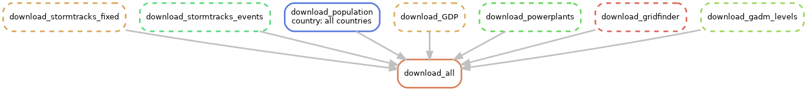
This data can be downloaded in one by entering snakemake -s workflow/Snakefile download_all -c{core_numbers} in the linux command line when in the root open-gira folder. Note that each individual bullet link explains how to download individual data selections, however, it is recommended to use the aforementioned command as snakemake will automatically detect already downloaded files in one go.
Administrative boundaries
The administrative boundaries are downloaded from https://gadm.org/data.html. This data is needed to determine the appropriate GDP value for a location of interest, cross-checking country data and also for statistical purposes. There are three rules which may be executed.
The download_gadm rule will download the 'gadm36_gpkg.zip' file which contains the administrative regions globally.
The download_gadm_by_country rule will download the individually selected country data of 'gadm36_gpkg.zip' file (see above).
Lastly, the download_gadm_levels rule will download the equivalent of 'gadm36_gpkg.zip' but as five separate layers, where each is a level of subdivision/aggregation (ranging from smallest administrative region to country). See https://gadm.org/download_world.html for further details.
GDP data
The GDP data is obtained from https://datadryad.org/stash/dataset/doi:10.5061/dryad.dk1j0 and is used to allocate each target of interest a GDP value. The download_GDP rule will perform this download tast.
Gridfinder data
The gridfinder data is obtained from https://gridfinder.org/ and is a map of predicted global power networks. The prediction is generated through applications of state-of-the-art algorithms on night satellite imagery. Due to lack of consistent global data, this is a rather suitable alternative with a high accuracy. Further details on the methods, algorithms and accuracy can be found in the paper 'Predictive mapping of the global power system using open data' by C. Arderne, C. Zorn, C. Nicolas & E. E. Koks from 2020 (https://www.nature.com/articles/s41597-019-0347-4).
The download_gridfinder rule will download this data.
Population data
Population data is obtained from https://www.worldpop.org/geodata/listing?id=79 and is used to allocate the appropriate GDP for target locations of interest as well as for statistical purposes.
Each country has a {country}_ppp_2020_UNadj_constrained.tif raster file which contains the geospatial population density. The {country} iso3 wildcard is retrieved from https://www.worldpop.org/rest/data/pop/cic2020_UNadj_100m. Internet connection is therefore required. The download_population_all will download the data for each country.
Power plant data
The power plant data is retrieved from https://www.wri.org/research/global-database-power-plants and used in the network generation (specifically for the network sources). This data can be downloaded by the download_powerplants rule.
STORM IBTrACS data
The constant-climate synthetic cyclone storm data is retrieved from https://data.4tu.nl/articles/dataset/STORM_IBTrACS_present_climate_synthetic_tropical_cyclone_tracks/12706085 and is used to simulate storms on the power network. The corresponding return periods are obtained from https://data.4tu.nl/articles/dataset/STORM_tropical_cyclone_wind_speed_return_periods/12705164 which are currently only used to generate the grid resolution of the intersection analysis. More details on the generated data can be found in the paper "Generation of a global synthetic tropical cyclone hazard dataset using STORM" by N. Bloemendaal, I. D. Haigh, H. de Moel, S. Muis, R. J. Haarsma & C. J. H. Jeroen from 2020 (https://www.nature.com/articles/s41597-020-0381-2).
The climate-changing synthetic cyclone storm data is retrieved from https://data.4tu.nl/articles/dataset/STORM_Climate_Change_synthetic_tropical_cyclone_tracks/14237678 and is used to simulate storms on the power network where climate changes are taken into account in the storm generation over the span of years. There are four model choices:
- CMCC-CM2-VHR4
- CNRM-CM6-1-HR
- EC-Earth3P-HR
- HAdGEM3-GC31-HM
For more details on these models see "Impact of Model Resolution on Tropical Cyclone Simulation Using the HighResMIP–PRIMAVERA Multimodel Ensemble, Journal of Climate" by M. J., Camp et al. from 2020.
The model choice is specified in the config file.
The data is split into 6 basins:
- EP: East Pacific
- NA: North Atlantic
- NI: North Indian
- SI: South Indian
- SP: South Pacific
- WP: West Pacific
The two letter abbreviation(s) is/are selected in the config.yaml file for analysis. The aforementioned paper also visually presents the storm basis.
Process data for power analysis
The processing of the input data is split into the following steps
- Split world (world_splitter)
- Document missing country data (process_exclude_countries)
- Process powerplants (process_powerplants)
- Process targets (process_target_box)
- Process gridfinder (process_gridfinder)
- Process network (process_network)
- Process network connections (process_connector)
Here, the order is important to the processing and the snakemake workflow can be visualised as follows.
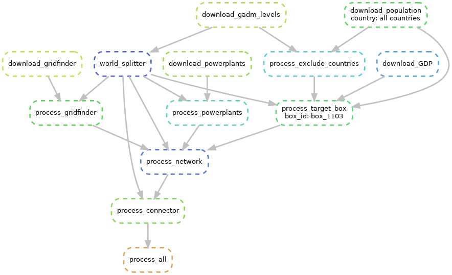
Note that this includes the download workflow process too. We also note that for this visualisation only one box_id wildcard has been specified (box_1103) to prevent visual cluttering. Whilst this is possible, the input usually consists of many more box_id wildcards which will be processed in parallel. This of course depends on the config.yaml inputs (see more details here)
These steps can be executed in one by entering snakemake -s workflow/Snakefile process_all -c{core_numbers}. Note
that if the download_all rule has not already run, then it will be run through this command automatically.
Split world
The input data consists of large files which is not possible to process as one for the purposes of this analysis. The solution is to therefore split the world into boxes (each with their own unique box_id) and, where possible, process each box individually. This has advantages of parallel processing with the snakemake workflow too.
Specifying the box dimensions
Each box is a square with width and height equal to the box_width_height value (units in degrees) specified in the config.yaml file. The result of this is depicted by the following image (box_width_height=5).
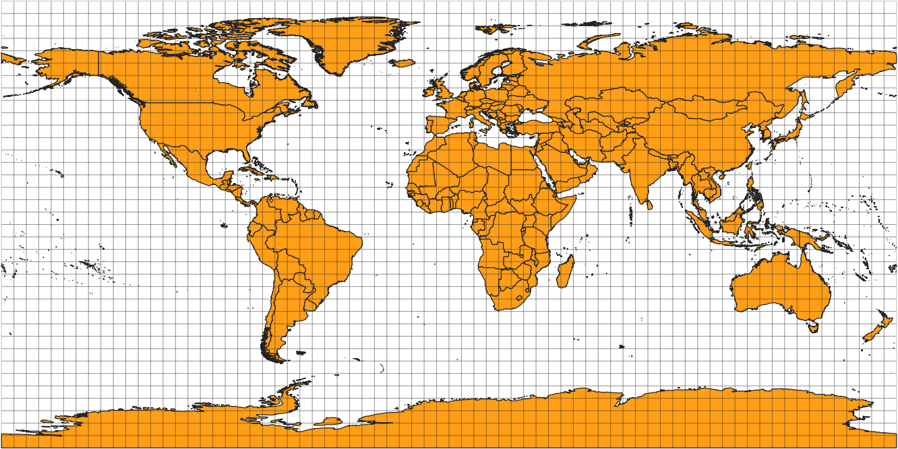
Specifying individual boxes
Futhermore, the option to process and intersect within a set of boxes is possible. In the config.yaml file, a list of boxes may be specified for the specific_boxes parameter. This means the analysis is now not global and there may be storms which do not intersect with these boxes. Additionally, it must be known which box box_id values are required in advance which can be done through geometrical equations or, more simply, by running split world first and then visualising results/power_process/world_boxes.gpkg and results/input/admin-boundaries/gadm36_levels.gpkg (level 0 recommended) in QGIS (for example).
Missing country data
Some .tif population data files are not available or do not exist for
certain countries or, often, overseas territories. This is documented through this script and output as
results/power_process/exclude_countries.txt. Examples often include South Georgia and the South Sandwich Islands,
Svalbard and Jan Mayen and the Cocos Islands. This data is then used in the target processing workflow.
Process power plants
In this file, the power plant input data is process to contain the columns "source_id", "name", "type", "capacity_mw", "estimated_generation_gwh_2017", "primary_fuel", "box_id", "geometry" and then split into a .csv file for each box_id. Note that if no power plants exist in the box_id, then an empty .csv file is produced. This is to allow for consistent snakemake workflows as it can not be known in advance.
Process targets
The idea behind this script is to take the gridfinder input data and assign populated locations a GDP value based on its location (country) and population. We refer to the populated locations (e.g. villages, cities, etc) as targets. These will be the sinks of the power network. Below is an example figure in which the grey regions represent the target locations.
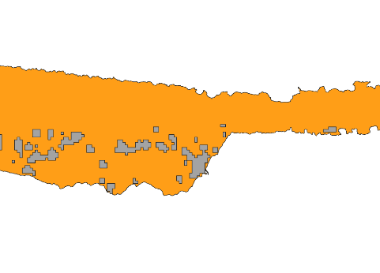
Target GDP
The GDP value for each target is assigned based on the multiplication of the GDP value per capita of the country in which the target is located and the population of the target.
Workflow
The individual target processing workflow is visualised as follows.
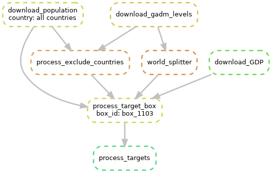
However, as previously mentioned, there are likely to be many more boxes. To illustrate this, four boxes can be seen in the workflow below.
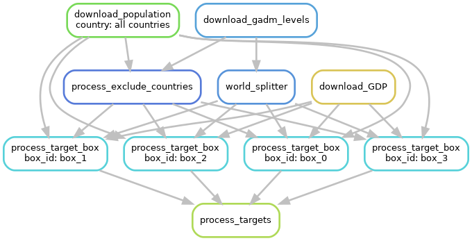
With a box_width_height value of 5 (deg), there would be 2592 boxes. Note that if no targets exist in the box_id, then an empty .gpkg file is
produced. This is to allow for consistent snakemake workflows as it can not be known in advance.
Process gridfinder
This file takes the gridfinder input data and assigns each component
(network edge) a box_id, based on its location. Here, the idxbox() function from
workflow/scripts/process/process_power_functions.py is used to index the components. Through knowledge of the box
parameters from the world split, it is possible to calculate the box_id:
box_id = (-np.round(lat / box_width_height + 1 / 2) + lat_max / box_width_height) * num_cols + np.round(lon / box_width_height - 1 / 2) - lon_min / box_width_height
- lat - latitude of component centroid
- lon - longitude of component centroid
- box_width_height - height and width of box
- lat_max - maximum latitutde value
- num_cols - number of cols (i.e. number of boxes across the equator)
- lon_min - minimum longitude value (lon_min can be negative)
- tot_boxes - total number of boxes
The box numbering starts at the top left (north-west), continues left to right (west to east) and ends at the bottom right (south-east) for longitude and latitude sign convention consistency. The edge cases are treated separately. Numpy allows for array inputs for lat and lon which improves computational efficiency. Note that if no components exist in the box_id, then an empty .gpkg file is produced. This is to allow for consistent snakemake workflows as it can not be known in advance.
Process network
Now that the targets, powerplants and network components have been processed, we can combine them into a network for each box. This is achieved through the combination of the target, power plant and network node data into one node data frame where the respective type is noted in the 'type' column. The snkit module (https://snkit.readthedocs.io/en/latest/index.html) is then used to combine these nodes with the network component edges. The snkit module further tidies the spatial network data.
Workflow
The workflow is visualised as follows (including previous dependencies)
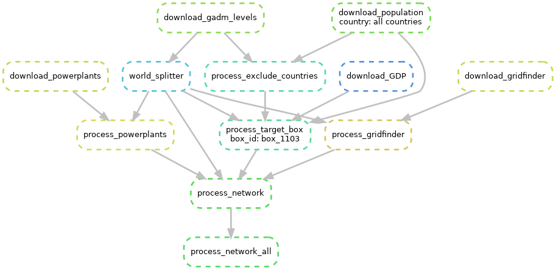
Again, only one box is selected for visual clarity, however, many boxes are typically processed in parallel for the
process_target_box rule. Note that if there is no network in the box_id, then an empty .gpkg file is produced. This
is to allow for consistent snakemake workflows as it can not be known in advance.
Process network
Now that the targets, powerplants and network components have been processed, we can combine them into a network for each box. This is achieved through the combination of the target, power plant and network node data into one node data frame where the respective type is noted in the 'type' column. The snkit module (https://snkit.readthedocs.io/en/latest/index.html) is then used to combine these nodes with the network component edges. The snkit module further tidies the spatial network data.
Workflow
The workflow is visualised as follows (including previous dependencies)
Again, only one box is selected for visual clarity, however, many boxes are typically processed in parallel for the
process_target_box rule. Note that if there is no network in the box_id, then an empty .gpkg file is produced. This
is to allow for consistent snakemake workflows as it can not be known in advance.
Intersect infrastructure with storms
The intersection of the storm data with the processed infrastructure is ordered into the following steps
- Region boxes (intersect_region_boxes)
- Generate region units (intersect_unit_generator)
- Analyse storm winds (intersect_winds_indiv)
- Intersect with infrastructure (intersect_damages)
- Overview (merge_overview_indiv_stats and merge_overview_all_stats)
Here, the order is relevant. First the boxes are assigned their respective region (EP, NA, NI, SI, SP, WP) in the region boxing workflow. The next step (unit generation) generates 'units' in which the wind speeds are assumed to be the same throughout. This is suitable for small units. Units containing no power network infrastructure (i.e. no network) are discarded. A wind model is then applied to the storm data to calculate the wind speed parameters at each unit (wind analysis). Given a failure criteria, infrastructure components are documented to fail in the infrastructure intersection workflow. The overview brings together the storm intersections for a very preliminary overview.
The intersection (including previous workflow dependencies) can be visualised as follows.
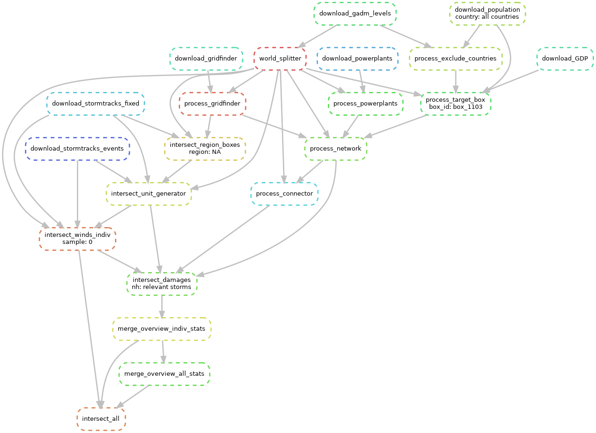
We use one box_id (box_1103), one region (NA) and one sample (0) for the wildcard parameters, however, in practice,
there are frequently many more. This is dependent on the config.yaml inputs.
The intersect_all rule has arrow dependencies other than merge_overview_all_stats due to the implementation of
snakemake checkpoints. This allows the correct scripts to be rerun in the event of incomplete previous runs (see
wind analysis for further details).
These steps can be executed in one by entering snakemake -s workflow/Snakefile intersect_all -c{core_numbers}. Note
that if the process_all and/or download_all rules have not already run, then they will be run through this command
automatically.
Region boxes
This scripts checks which boxes (unique box_id) are located in which regions (EP, NA, NI, SI, SP, WP). This is then used in the unit generation to only process the selected storm regions in the config.yaml file.
Unit generation
A unit is defined as a rectangular-shaped geometric area in which the wind speed parameters during a storm are assumed to be the same throughout the area. Units not containing power network infrastructure are discarded as they will never contain any storm damages. The size of the unit is currently set to be equal to the return period map data. This is deemed to be a suitable granularity and also could allow for future comparisons (not currently implemented). The figure below shows an example of units around the southern USA/Caribbean which belongs to the North American (NA) region basin.
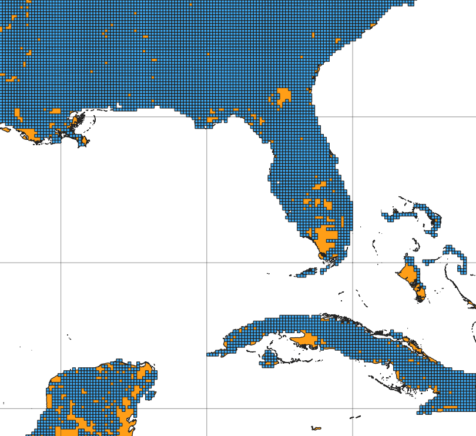
Storm analysis
This file takes the storm data and calculates the wind speed parameters for each unit (see unit generation) for each storm.
The parameters investigated are
wind_locationWind speed at the unit at the storm time stepwindWind at cyclone track at the storm time stepwind_maxMaximum wind speed over entire storm at the cyclone trackduration_15msNumber of occurrences of wind speed above 15m/s at the unitduration_20msNumber of occurrences of wind speed above 20m/s at the unit
Each time step is 3 hours. The following steps are applied:
- load the storm data
- For each unit save the affected storms and their wind parameters to a parquet file
- For each storm load the relevant units (see above), calculate the wind parameters at all (relevant) units and save to a .csv file
After this, each storm will have a .csv file containing all wind speed parameters at all relevant units. In addition, in step 2., only
storms with a storm centre is within hurr_buffer_dist = 1300 km (of the unit) will be saved. This can be visualised as only saving
data within a 'buffer' of the storm track. A unit that is too far from the storm centre will be unaffected by the storm. The
hurr_buffer_dist parameter is designed to capture this. Furthermore, in step 3., only storm parameters which have a
wind_location value above min_windlocmax and wind_max value above min_windmax are considered.
Values below this can be considered negligible and will not cause infrastructure damage.
Each storm has a unique identifier in the form #1_#2_#3 where #1 is the sample number from the storm data, #2 is
the year in that sample and #3 is the #3-th storm of that year. This is often referred to by nh (number hurricane) within the workflow.
The processing time, memory and storage costs were heavily considered during the script development.As such measures have been implemented to reduce these parameters. Rather than save the intermediate data to memory, each unit is saved to a parquet file (step 2.) which can be later retrieved (step 3.). Furthermore, if unit parquet files already exist, it will be skipped in step 2. and a dictionary is formed of which units contain which storm data in attempts to improve the computational time.
Snakemake checkpoints (https://snakemake.readthedocs.io/en/stable/snakefiles/rules.html) are used here as the number of
storms and their unique identifier is not known here. It is highly recommended not to interrupt this process as, in certain
cases, the checkpoint function will not know whether it has evaluated all storms and may not rerun in a following snakemake
command. Should this process be interrupted and you wish to rerun all wind evaluations, you must delete
results/power_intersection/storm_data/all_winds/{region}/{sample}/{region}_{sample}_completed.txt for the corresponding region(s) and sample(s).
Damage calculations
This script uses the wind parameter data to determine the damage parameters for an individual storm.
The process consists of the following:
- Load the wind parameter data from the storm
- For each unit, determine if the damage criteria is met (for the lower, central and upper damage thresholds)
- For these damaged units, mark any infrastructure within these units as damaged
- Calculate the damage parameters when infrastructure fails
- Save the damaged units and associated infrastructure components and targets to gpkg files
- Add basic statistics for each storm
- Write the storm track to the gpkg file
A few notes should be made on this process.
Step 2
The (central) damage criteria is assumed to be a minimum wind speed of a category 2 hurricane. This corresponds to 43 m/s. The lower threshold is set to 39 m/s and upper to 47 m/s.
Step 4
In order to assign each target a GDP loss value, we first create power network components. See an example below in which red circles are power plants and blue squares are the targets.

Each component can be treated as its own entity and does not interact with other components. That means that the power plants in a selected component provide power to the targets in this selected component. To achieve this, we assume that the total power in a component is given by the sum of the power from all power plants in that component. We assume the power is distributed proportionally to the GDP of the target (see here for details on target GDP allocation):
(nominal target power) = (total component power) * (target GDP) / (total component target GDP)
Say now that a storm hits and it is found (using the damage criteria) that one network component fails. This marked by target symbol. The component may not be split into subcomponents:

Each subcomponent can now be examined where now
(post storm target power) = (total subcomponent power) * (target GDP) / (total component target GDP)
The fraction (target GDP) / (total component target GDP) remains unchanged as it is assumed that the ratio does
not change. Each target then has a GDP loss described by the following (using the proportionality):
target GDP loss = [((nominal target power) - (post storm target power))/ (nominal target power)] * (target GDP)
(n.b. the term inside the brackets corresponds to 1-f for the explanation in step 6)
Further examples include two damaged components:

Three damaged components:
 Here, there is a subcomponent which is ignored as it does not contain power plants or targets.
Here, there is a subcomponent which is ignored as it does not contain power plants or targets.
Network loops with one damaged component:
 Note that the very inner loop is ignored as it is a 'network' with one node.
Note that the very inner loop is ignored as it is a 'network' with one node.
Two damaged components:

One can see that the above analysis can be performed regardless.
Step 6
For this step and further steps, we must first define the 'f value' for each target:
f = (nominal power)/(power after storm)
When f=0 the target has no power after the storm and f=1 means the target is unaffected by the storm.
When 0<=f<1 then the target is listed as affected by the storm. The effective population affected is the fraction of
the population which has an effective power of 0 i.e. pop_eff = (1-f)*pop summed for each target. This means that if
a target has a population of 100 people and f=0.2, pop_eff = 80. We can now define the damage parameter statistics that are considered:
- GDP losses: indirect economic losses
- targets affected: number of targets which have the property
0<=f<1 - targets
1>f>0_75 - targets
0_75>=f>0_5 - targets
0_5>=f>0_25 - targets
0_25>=f>0 - targets with no power (
f=0) - population affected: The population which is contained in affected targets (
0<=f<1) - population with no power (
f=0): The population which is contained in targets with no power after the storm (f=0) - effective population affected: The population affected which is proportional to the f value of their respective targets
- affected countries: All countries which have at least one target that is affected (
0<=f<1)
Storm Data
The data for each storm (including damage parameters) is then found in results/power_intersection/storm_data/individual_storms/{region}/{sample}/{storm_identifier should this be wished to be examined.
Rerunning damage calculations
Should the damage calculations need to be rerun (due to e.g. damage tolerance adjustment) then you must delete (or rename) results/power_output/statistics/{region}/{sample}/combined_storm_statistics_{region}_{sample}.csv for the corresponding region(s) and sample(s)
AND delete (or rename) results/power_intersection/storm_data/individual_storms. Use -n at the end of the snakemake command to check this has worked with a dry run first before running the snakemake workflow.
Intersect Overview
This process is used to bring some parameters of the storm intersection data together. It's main
purpose is actually such that snakemake is able to correctly use the checkpoint rule (as explained
in the storm wind analysis). For each region and each sample, the
parameters described in the damage calculation workflow are collected in
a region-sample csv file. Then each region-sample csv file is collected into a combined csv file open-gira\results\power_output\statistics\combined_storm_statistics.csv.
Analysis of Results
Now that the downloading, processing and intersection workflow steps have been completed we can proceed with the analysis. The following options are available
- Empirical distribution generation
- Empirical affected country pair matrix
- Target statistic gathering followed by statistic aggregation
These steps can be executed in one by entering snakemake -s workflow/Snakefile analyse_all -c{core_numbers}. Note
that if the intersect_all, process_all and/or download_all rules have not already run, then they will be run through this command
automatically.
See XXX for figure generation
Empirical distribution generation
The empirical distribution generation takes the storm data and plots (according to the metric) the empirical distribution. The metrics which are analysed are
- GDP losses
- targets with no power (f=0)
- population affected
- population with no power (f=0)
- effective population affected (EACA see paper)
- Reconstruction costs (EAD see paper)
An example for EACA and EAD are seen (sequentially) below.
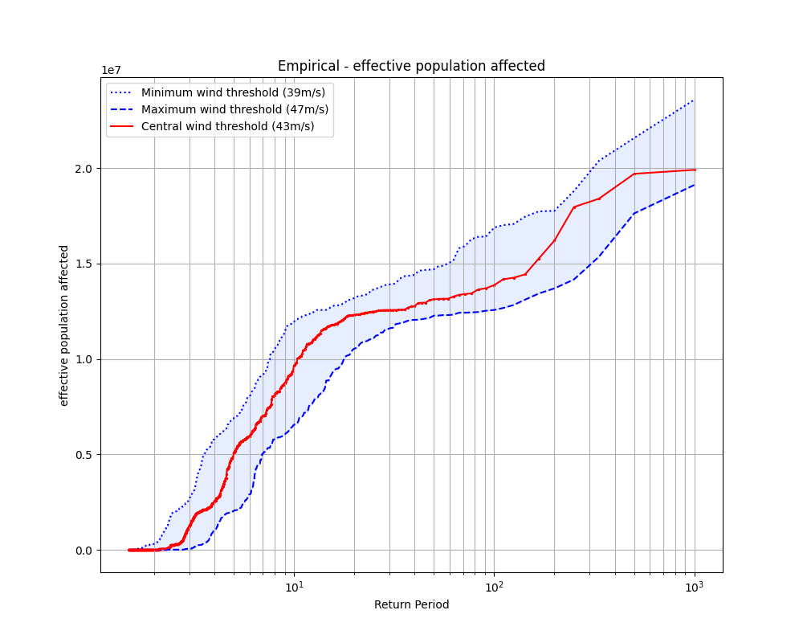
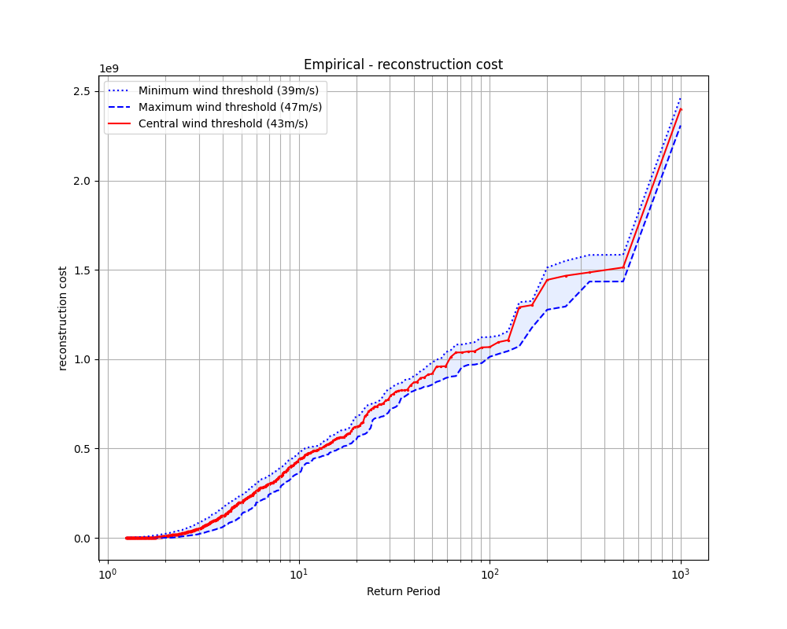
Each metric is saved to an image plot in results/power_output/statistics/empirical.
These files can be generated (in one go) through the analyse_empirical_distribution rule.
Empirical affected country pair matrix
The empirical affected country pair matrix generation provides two plots:
- Empirical fraction of a storm hitting both countries given it hits one of them
- Given country A is hit, what is the likelihood also B is hit
Examples for both are given respectively:


These files are found in results/power_output/statistics/empirical.
These two files can be generated (simultaneously) through the analyse_country_matrix rule.
Target statistic gathering
The target statistic gathering process iterates
through all targets and gathers (for each target) the sum and mean of each metric. In the config.yaml file, the
parameter top_percentile_select defines the percentile to analyse (in percent) for geospatial analysis and visualisation. Note
that top_percentile_select = 100 will include all results. Also note that this percentile includes all storms even if they
have not met the threshold to be documented in the wind analysis. It is recommended to
leave increased_severity_sort = True, however, should a top fraction of storms wish to be investigated and analysed only
then increased_severity_sort = False will reverse the percentile selection.
A new gpkg file is generated with the targets and their summed and average parameters as a target feature. This file is found
as results/power_output/statistics/aggregate/targets_geo_top{top_percentile_select}{T or F}percent.gpkg where T is selected
if increased_severity_sort = True and F if increased_severity_sort = False to ensure no data is overwritten.
One option now to visualise this data is to use the aggregate function in QGIS (or equivalent), however, this is a very time intensive process which is not found to be very flexible. Rather, it is recommended to use the statistic aggregation script. Click here to be directed onwards including details on the rule to call the workflow.
Statistic aggregation
For context, see the target statistic gathering workflow first.
Based on the results/power_output/statistics/aggregate/targets_geo_top{top_percentile_select}{T or F}percent.gpkg file, this script now generates a new gpkg file: results/power_output/statistics/aggregate/targets_geo_top{top_percentile_select}{T or F}percent_aggregated_region.gpkg
which has level geometries with the aggregated statistics as features. The level must be specified in the config.yaml file
as the aggregate_level parameter. See details on the level selection in the download levels file and/or https://gadm.org/download_world.html.
The parameter selection aggregate_level = 0 equates to countries and so should a finder region be requested, then aggregate_level = 1 is recommended.
aggregate_level = 2 and above is feasible but comes at the cost of a longer computational time. An example for aggregate_level = 1 is seen below (note that the legend must be generated through QGIS or elsewise).
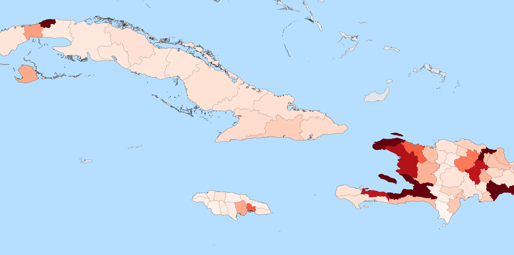
Here we investigate the average population affected, however, the full list of selectable parameters is
- Population without power
- Effective population affected
- Population without power
- Power loss
- f_value
- GDP losses
Both the anually expected and cumulative values for the above are calculated with the exception of the f_value which does not investigate the cumulative value as this would not make sense as a metric.
The entire gathering and aggregation workflow can be called through the analyse_aggregate_levels rule.
Further analysis
Now you've worked through an example of the open-gira workflow, and you have an understanding of the relevant file formats, how the process works, and how to inspect things as you go along, you're ready to use open-gira for your own work. Find an OSM datafile to work with, slice it up, and intersect some hazard data. The resulting .geopandas data can be manipulated to answer particular questions, or further combined with different spatial information or other open-gira outputs.
Cleaning the output
The output directory ./results/ is orderly but large.
You can remove all the directories except ./results/input/ using the command:
snakemake -R clean
All directories including ./results/input/ can be removed using the command:
snakemake -R clean_all
Neither of these commands will remove the output, the final
./results/<dataset>_filter-highway-core_hazard-<hazard>.geoparquet files.
To remove everything, simply delete the ./results/ directory:
rm -rf results
Advanced view of the workflow
The simple view of the workflow covered in the main workflow section is relatively easy to understand, but does a poor job of explaining where Snakemake excels. Below, you will find steadily more complex views of the workflow, becoming increasingly realistic with each iteration. Click on any image to view the full-size version.
Simple view
As a reminder, here's our simple workflow view again:
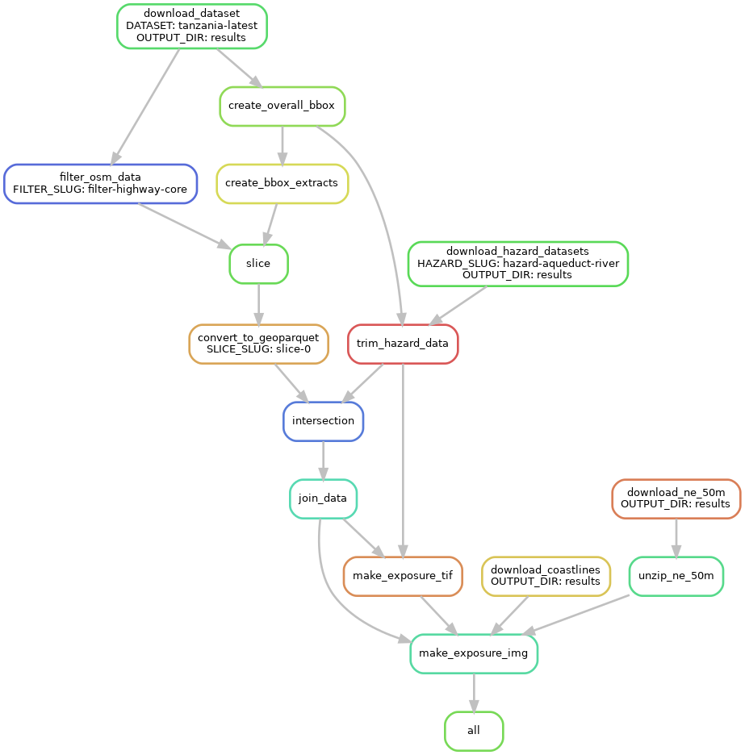
Multiple slices
Here is a more realistic (but slightly harder to follow) version of the previous
DAG with 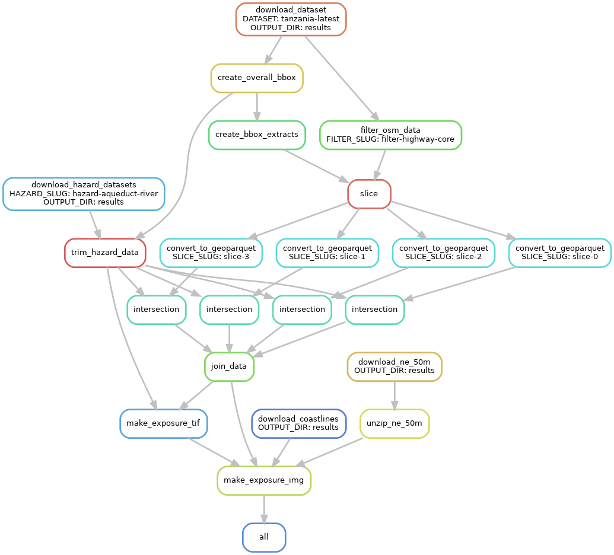slice_count: 4.
In actual practice we'll often be using much higher slice_count values.
In this tutorial, for instance, we use slice_count: 36.
{kind=link}
Multiple hazard and infrastructure datasets
Another complexity is that we can specify multiple datasets to use --
we can feed in different infrastructure maps, and different hazard information.
Each infrastructure map is combined with each hazard dataset to produce a final output.
The config.yaml file for this diagram includes:
hazard_datasets:
aqueduct-coast: 'https://raw.githubusercontent.com/mjaquiery/aqueduct/main/tiffs.txt'
aqueduct-river: 'https://raw.githubusercontent.com/mjaquiery/aqueduct/main/rivers.txt'
infrastructure_datasets:
tanzania-latest: 'https://download.geofabrik.de/africa/tanzania-latest.osm.pbf'
wales-latest: 'https://download.geofabrik.de/europe/great-britain/wales-latest.osm.pbf'
slice_count: 1
{kind=link}
Full workflow
Finally, we'll set the 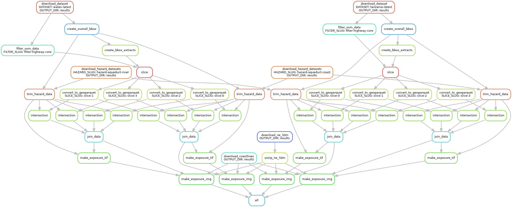slice_count from the above config to 4 again, and glimpse the
full workflow. Remember, though, we could have many more datasets and use many more slices.
{kind=link}